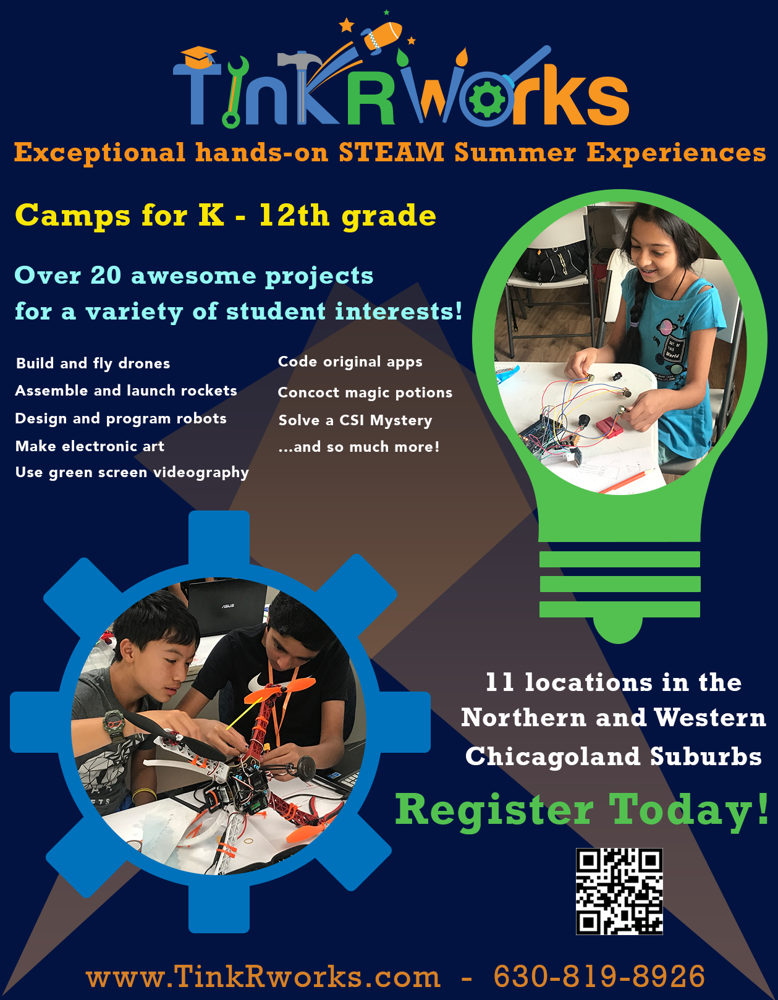

Chicago United Quidditch Club Logo
This is the logo I designed for my community quidditch team, Chicago United Quidditch Club. I incorporated the Chicago flag and I chose three popular buildings in the Chicago skyline that are all different heights, heights that correspond with the different sized quidditch hoops used in gameplay.
The TinkRworks Approach
TinkRworks is a start-up company that provides STEAM experiences for students. When I worked for this company, I created an infographic that reflected the company’s approach to preparing both students and professionals to succeed in their careers. I imagined each aspect of the projects TinkRworks provides as “steps” towards college graduation, so I displayed each key objective as a step in a staircase. I also conveyed the engineering design principles (test, refine, iterate) as repetitive cycle to show that TinkRworks encourages students to take risks, fail, evaluate what could be improved, and try again until they achieve the desired result.
While creating this infographic, I really wanted to push myself to explore the different functions of Photoshop, so I did not use any third-party graphics.
Confidential and Proprietary Property of TinkRworks LLC

TinkRworks Summer Camp Magazine Ad
This is an advertisement I made for Chicago Parent Magazine that promoted the different summer camps run by TinkRworks. To make the pictures pop, I designed a lightbulb and a gear for backgrounds, and cropped the pictures to fit inside. I also included a QR code that would send the viewer right to the TinkRworks’ summer camp registration page.
Confidential and Proprietary Property of TinkRworks LLC
TinkRworks Problem Statement Slide
This is a slide that I made for TinkRworks fundraising purposes. This graphic states the problem that TinkRworks is addressing at the top, and shows questions that are asked by students, parents, educators, and employers in the real world. My employers wanted me to visually convey their observed separation between formal education and the workforce, so I separated the two entities by a river and put the working world on a plateau. Both sides need to be connected somehow, and thus TinkRworks acts as a bridge between the two sides.
To make this slide, I took the original slide concept that they had put together, and decided to go in a vector art direction.
Confidential and Proprietary Property of TinkRworks LLC
ArtWiring Project Concept Logo
This is a potential logo that I designed for a start-up company in the works called the ArtWiring Project. The company will provide experiences for both adults and families where they can incorporate paper thin circuits into DIY art projects. I wanted to convey that when students engage with the projects, they use both the left and right sides of their brain (left = logistics, right = creativity). The whole graphic could be used as a header for a flyer, or for the face of a business card.